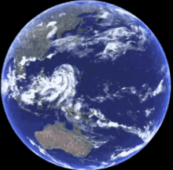

Just as moving objects have kinetic energy due to their linear motion, rotating objects have rotational kinetic energy due to their spinning motion. This energy depends on both how much mass is distributed away from the axis (moment of inertia) and how fast the object is spinning (angular velocity).
Explore how radius, mass, and angular velocity affect rotational kinetic energy with this interactive simulation.
The more mass an object has, and the farther that mass is from the axis of rotation, the greater its moment of inertia. The faster it spins, the more rotational kinetic energy it has. This is why a spinning flywheel or a rotating planet stores a lot of energy.
| Linear | Rotational |
|---|---|
| $K = \frac{1}{2}mv^2$ | $K_{\text{rot}} = \frac{1}{2}I\omega^2$ |
| Mass ($m$) | Moment of inertia ($I$) |
| Speed ($v$) | Angular speed ($\omega$) |
| Translational motion | Rotational motion |
A solid disk of mass $2\,\text{kg}$ and radius $0.5\,\text{m}$ spins at $10\,\text{rad/s}$. What is its rotational kinetic energy?
Solution:
Moment of inertia for a solid disk: $I = \frac{1}{2}MR^2$
$I = \frac{1}{2} \times 2 \times (0.5)^2 = 0.25\,\text{kg} \cdot \text{m}^2$
$K_{\text{rot}} = \frac{1}{2} \times 0.25 \times (10)^2 = 12.5\,\text{J}$
A solid sphere and a thin hoop both have mass $1\,\text{kg}$ and radius $0.4\,\text{m}$, spinning at $5\,\text{rad/s}$. Which has more rotational kinetic energy?
Solution:
For the sphere: $I_{\text{sphere}} = \frac{2}{5}MR^2 = \frac{2}{5} \times 1 \times (0.4)^2 = 0.064\,\text{kg} \cdot \text{m}^2$
$K_{\text{rot, sphere}} = \frac{1}{2} \times 0.064 \times 25 = 0.8\,\text{J}$
For the hoop: $I_{\text{hoop}} = MR^2 = 1 \times (0.4)^2 = 0.16\,\text{kg} \cdot \text{m}^2$
$K_{\text{rot, hoop}} = \frac{1}{2} \times 0.16 \times 25 = 2.0\,\text{J}$
Conclusion: The hoop stores more rotational kinetic energy because its mass is farther from the axis.